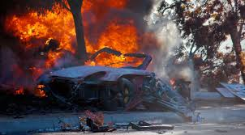

Cuando era modelo, no lo quería. Cuando fue famoso, lo detestaba. Lo suyo era la pasión por la velocidad, tanto en las películas como en su vida real. Y de esa manera, falleció. Tenía apenas 40 años. Y era una estrella, gracias a la saga Rápido y Furioso
La adrenalina que le provocaba subirse a un coche, adaptarlo a su gusto y manejar a alta velocidad, no lo comparaba con ninguna otra cosa. Lo apasionaba. Y el peligro no lo atemorizaba: prefería no apelar a un doble de riesgo para filmar las escenas de acción de sus películas, cuando debía conducir un vehículo, aunque terminaba pagando el precio (en la filmación de la sexta entrega de Rápido y Furioso, se rompió los ligamentos cruzados). Y al fin, de esta manera Paul Walker encontraría su muerte temprana, con solo 40 años.
El terrible suceso en un cruel giro del destino, el protagonista de las películas de rápidos y furiosos, fallecería en un accidente de tráfico.
En la madrugada del 30 de noviembre de 2013, el Porsche que manejaba el piloto Roger Rodas, amigo de Paul, chocó contra un poste de luz y luego contra un árbol y las llamas se apoderaron de la escena. Paul viajaba en el asiento del acompañante. Y lamentablemente los dos murieron
iban alrededor de 330km/h con un posche gt carrera en la autopista de Valencia, Santa Clarita, California, Estados Unidos
la última escena donde apareció Walker, su personaje y el de Tyrese Gibson ayudaban a caminar al de Vin Diesel (“Toretto”).
